Latin ⟨ƌ⟩ semantically and visually mediocre.


The Frashëri alphabet was by far the most used alphabet from 1886 up to at least 1908 (see § Secondary sources), and continued being in use until 1913. This was the time of the Rilindja (Albanian National Awakening) and of the collapse of the Ottoman Empire. There have been written countless works in the script (see nonexhaustive list), some of which are first editions of staple works of Albanian literature, by various different authors, including of course the brothers Sami and Naim Frashëri, two of the most influential figures of the Albanian National Awakening, who devised the script, as well as notable figures of Jani Vreto, Kristo Negovani, Mihal Grameno, Gjerasim Qiriazi, Pashko Vasa, Spiro Dine, Thanas Floqi, Mithat Frashëri, Kristo Dako and Lef Nosi, among others. Take for example Shqipëria. Ç'ka qenë, ç'është e ç'do të bëhetë? (1899) which became the manifesto of the Rilindja, or Valët e Detit (1908), at its time the longest book ever printed in Albanian (856 pages). There were multiple publishing houses around the Balkans who printed in this script (see below).
The alphabet is also known as Istanbul (Elsie 2010), Constantinople (Skendi 1960) or Stamboul (Trix 1999). Here we prefer the name Frashëri (Skendi 1960, Rrota 1936), the name of its inventor, to avoid possible confusion with the Turkish language. It's also a fact that aside from the initial works of 1879, only a couple more documents were printed in Istanbul, while the vast majority was printed in Bucharest, Sofia, Thessaloniki, Bitola and Korçë, hence making the label Istanbul not great at describing the geographic distribution of its printing presses either.
The alphabet had thee variants, here labelled for convenience “early”, “classic” and “late”. In 1879 was founded the Society for Albanian printing, who published the primer Alfabetare e Gluhësë Shqip (1879), Istanbul: A. Zelici (136 pages), also known as the Abetarja e Stambollit with a first version of the alphabet. It's a rudimentary form and quite different from the form of the alphabet that was later used and spread out from 1886 on. The differences are the use of Greek capital letters for dh and sh, a different letter for lowercase gj, the looptail ⟨g⟩ for g, capital ⟨Ɛ⟩ for e, capital ⟨E⟩ for ë, and Cyrillic ⟨З з⟩ for zh. It's given here for completeness, it should not be taken to heavily into consideration, since aside from this primer, I could only find another 16-page pamphlet from the same year written in this variant, Kanonizmë e Shoqërisë të shtypur shkronja Shqip (1879), Istanbul: A. Zelici, which announces the foundation of the Society.
Literature in the script begins in 1886, in the variant that is here considered “classic” Frashëri. After the Congress of Manastir (1908), which adopted the Frashëri alphabet as the official alphabet of Albania, alongside Bashkimi, the Greek forms for p and rr where ditched in favour of their modern Latin equivalents, and the glyphs lowercase glyphs for e and ë switched roles. Aside from this there is no variation in the glyphs used in the any of the works used from 1886 to 1913.
The examples images for the early orthography are taken from the Abetarja e Stambollit (1879), for the classic from Gasper Benusi (1890), Abetare e gjuhësë shqip, Bucharest: Dituri. In the section below with the recap I also present forms from Jani Vreto (1886), Mirëvetija, Bucharest: Drita. The images for the late orthography are from Dhimitër Papakristo (1911), Abetare për shkolla fillore meshkujsh e femnash, Manastir: Tregëtare Nërkombëtare.
| modern orthography | early (1879) | classic (1886–1908) | late (1908–1913) | current possible encodings | proposed encoding (1886–1908) | |||
|---|---|---|---|---|---|---|---|---|
| cursive | cursive | cursive | ||||||
| dh | 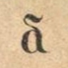 | 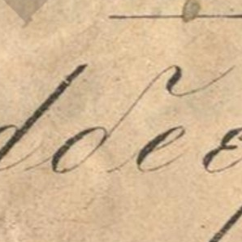 | |
|
|
|
Greek ⟨δ⟩. | I propose we create LATIN SMALL LETTER FRASHERI DH and LATIN CAPITAL LETTER FRASHERI DH. Visually, the small one is a it's a rotated looptail g. |
| Dh | 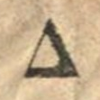 | 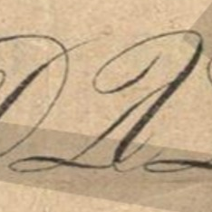 | |
|
|
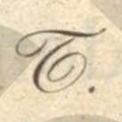 | Greek ⟨Δ⟩ visually misleading, but good for early. Cyrillic ⟨Б⟩, semantically terrible. Latin ⟨Ƌ⟩, mirrored. | |
| e | 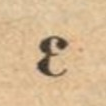 | 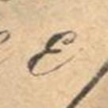 | 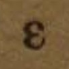 | |
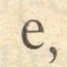 | |
Greek ⟨ε⟩ and Latin ⟨ɛ⟩. | I would keep either keep Greek ⟨Ε ε⟩ for the classic, and Latin ⟨Ɛ ɛ⟩ for the early script, and Latin ⟨E e⟩ for the late. |
| E | 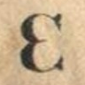 | 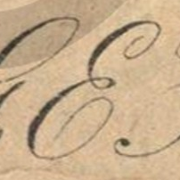 | |
|
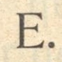 | |
Latin ⟨E⟩ and Greek ⟨Ε⟩, as above. | |
| ë | 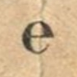 | 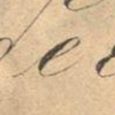 | |
|
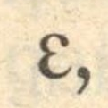 | 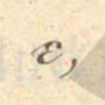 | Latin ⟨e⟩. For late Latin ⟨ɛ⟩. | I propose we create LATIN CAPITAL LETTER FRASHERI SCHWA to be used in classic and late, while the lowercase schwa keeps Latin e for classic and early, and ⟨ɛ⟩ for late. |
| Ë | 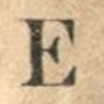 | 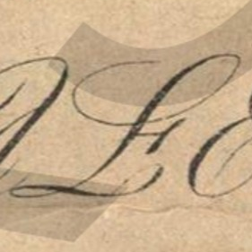 | |
|
|
|
None, Pluto ♇ and Georgian ⟨Ⴒ⟩ resemble it. | |
| g | 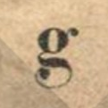 | 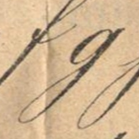 | |
|
|
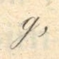 | Latin script ⟨ɡ⟩, correct visually, bad casing. Latin normal ⟨g⟩, dangerous considering gj, but good for early. | I would use script ⟨ɡ⟩ and capital ⟨G⟩. Early gets normal ⟨g⟩. |
| G | 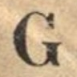 | 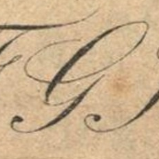 | 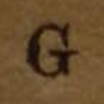 | 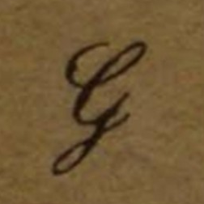 | |
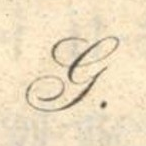 | Latin normal ⟨G⟩, since Latin script ⟨Ɡ⟩ is terrible visually. | |
| gj | |
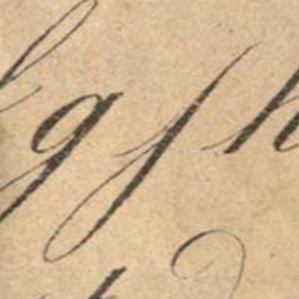 | 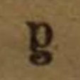 | |
|
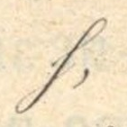 | Currently no way to be explicit about the loop of Latin ⟨g⟩. Greek ⟨γ⟩ for any stage, visually misleading, semantically acceptable. | I propose we create LATIN SMALL LETTER LOOPTAIL G, which in the end would probably prove itself useful not just for Frashëri. I know looptail g was used for /ɣ/ in early IPA, and having a way to make that explicit would surely help. The capital letter would use Greek ⟨Γ⟩. |
| Gj | 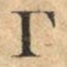 | 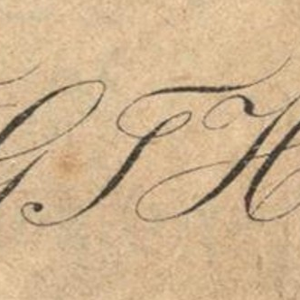 | |
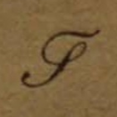 | 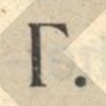 | 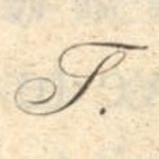 | Greek ⟨Γ⟩. | |
| ll | 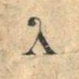 | 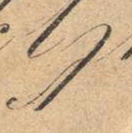 | |
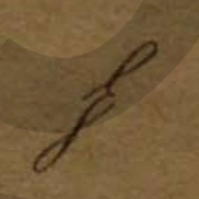 | |
|
Greek ⟨Λ λ⟩. | — |
| Ll | 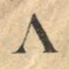 | |
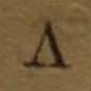 | |
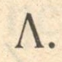 | 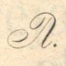 | ||
| nj | 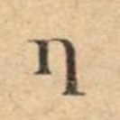 | 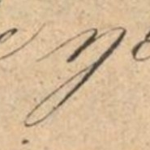 | |
|
|
|
Latin ⟨ƞ⟩ or ⟨ŋ⟩. | We can use ⟨Ŋ ŋ⟩, and make the typeface display it as ⟨И ŋ⟩. |
| Nj | 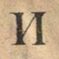 | 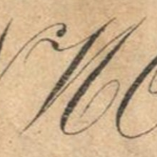 | |
|
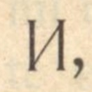 | |
Latin ⟨Ƞ⟩ or ⟨Ŋ⟩ based on lowercase. Cyrillic ⟨И⟩ bad semantics. | |
| p | 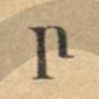 | 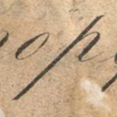 | 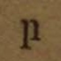 | 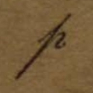 | |
|
Greek ⟨Π π⟩. Latin ⟨P p⟩ is confusing given rr, but good for late. | We would benefit from some research. If that form is found elsewhere with other meanings, then we create LATIN SMALL LETTER OPEN-BOWL P. If it isn't, then we can call it LATIN SMALL LETTER FRASHERI P. The capital form uses Greek ⟨Π⟩. |
| P | |
|
|
|
|
|||
| rr | |
|
|
|
Greek ⟨Ρ ρ⟩. | — | ||
| Rr | |
|
|
|
||||
| sh | |
|
|
Greek ⟨σ⟩. | I propose we create LATIN SMALL LETTER FRASHERI SH and LATIN CAPITAL LETTER FRASHERI SH or equivalent. The lowercase form resembles the Fraktur capital S. | |||
| Sh | |
|
Greek ⟨Σ⟩, visually misleading, good for early. | |||||
| th | |
|
|
Greek ⟨θ⟩ acceptable. Latin ⟨ƌ⟩ semantically and visually mediocre. |
I would say, like for p above, we need to check if other people have ever used it. Then it's either LATIN SMALL LETTER D WITH INWARD HOOK or LATIN SMALL LETTER FRASHERI TH. I'm hesitant to use Greek θ for the lowercase form, despite its handwritten appearence, since it looks pretty different from its print form, and would lose the symmetry it had with dh. If the authors really had perceived it as a form of theta, they would have just used the woodcut they had for theta, but they actually used a rotated single story ɡ, like they did for dh. Anyone looking at the symbol would associate it with d with a rightward hook, probably nobody would think of theta. | |||
| Th | |
|
|
Greek ⟨Θ⟩. | ||||
| xh | |
|
|
None, but bendable to Latin ⟨X̧ x̧⟩ or ⟨X̦ x̦⟩, like for late. | I propose we create LATIN SMALL LETTER FRASHERI XH and LATIN CAPITAL LETTER FRASHERI XH for the form in early and classic. | |||
| Xh | |
|
|
|||||
| zh | |
|
Combined Latin ⟨Z̧ z̧⟩ or ⟨Z̦ z̦⟩. For early either Cyrillic ⟨З з⟩ or Latin ⟨Ʒ ʒ⟩. | — | ||||
| Zh | |
|||||||
| image | possible specific name | possible general name |
|---|---|---|
|
|
LATIN SMALL LETTER FRASHERI DH | LATIN SMALL LETTER D WITH LOOP |
|
|
LATIN CAPITAL LETTER FRASHERI DH | — |
|
|
LATIN CAPITAL LETTER FRASHERI SCHWA | — |
|
|
LATIN SMALL LETTER FRASHERI GJ | LATIN SMALL LETTER LOOPTAIL G |
| LATIN SMALL LETTER FRASHERI P | LATIN SMALL LETTER OPEN-BOWL P | |
|
|
LATIN SMALL LETTER FRASHERI SH | — |
|
|
LATIN CAPITAL LETTER FRASHERI SH | — |
|
|
LATIN SMALL LETTER FRASHERI TH | LATIN SMALL LETTER D WITH RIGHTWARD HOOK |
|
|
LATIN SMALL LETTER FRASHERI XH | — |
| LATIN CAPITAL LETTER FRASHERI XH | — |
| lower | a | b | c | ç | d | dh | e | ë | f | g | gj | h | i | j | k | l | ll | m |
|---|---|---|---|---|---|---|---|---|---|---|---|---|---|---|---|---|---|---|
| upper | A | B | C | Ç | D | Dh | E | Ë | F | G | Gj | H | I | J | K | L | Ll | M |
| lower | n | nj | o | p | q | r | rr | s | sh | t | th | u | v | x | xh | y | z | zh |
| upper | N | Nj | O | P | Q | R | Rr | S | Sh | T | Th | U | V | X | Xh | Y | Z | Zh |
[A] cultural-educational society, called the Society for Albanian Publications, was constituted in 1879 in Constantinople with the aim of promoting publications in the Albanian language. At the head of it were the two brothers Frashëri, Sami (known in Turkey as Şemseddin Sami Bey) and Naim, the latter the apostle-poet of Albanian nationalism, assisted by prominent Albanians of the Orthodox and Catholic faiths. This society devised an Albanian alphabet based on Latin characters some Greek letters, like ð (th in father) and θ (th in breath) — Sami and Naim had studied in the Greek gymnasium of Janina — and some independent ones, like h (gj), ceated by Sami himself for particular Albanian sounds. Adopting the principle of one letter for each sound, this alphabet was linguistically well-founded. It was called "the Constantinople Alphabet" or "the Frashëriot Alphabet" because of the Frashëri brothers. In it the society published its organ Drita, an Albanian ABC and primer and several textbooks.
The Constantinople alphabet was adopted by various publications of the Albanian colonies — in Bulgaria, Rumania, and elsewhere — and by a large part of Albania proper. The reports of the Austrian consuls in Albania advise that by 1905 the Constantinople alphabet was used by the major part of the population, Orthodox as wel as Moslem, which lived in the south, and had extended northward beyond Durrës, as far as Dibër and the region south of Prizren.
This "Stamboul Alphabet" was designed by Shemseddin Sami Bey and, unlike Ahunzade's proposal, was immediately acted upon and subsequently adopted by the new Albanian presses in Bucharest and Sofia, from which it spread through southern and central Albanian lands, all still under Ottoman rule.
The Stamboul alphabet for Albanian thereby became the only Latin-based alphabet adopted by a largely Muslim people in the Ottoman Empire; it predated Atatürk's promulgation in 1928 of a Roman script for Turkish by almost fifty years. The Stamboul alphabet was remarkable for the period in which it was introduced, but it was also notable for its inclusion of Greek and Cyrillic characters among the more numerous standard Latin ones.
The three main alphabets under discussion were the Istanbul alphabet devised by Sami bey Frashëri, the Bashkimi alphabet supported by Gjergj Fishta and his Bashkimi literary society of Shkodra, and the Agimi alphabet of the Agimi literary society, represented by Ndre Mjeda. A committee of 11 delegates headed by Fishta was elected, and, after three days of deliberations, they resolved to support two alphabets: a modified form of Sami Frashëri's Istanbul alphabet, which was most widely used at the time, and a new Latin alphabet almost identical to the Bashkimi in order to facilitate printing abroad.